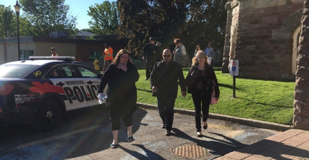

Main Page
Politics
Sports
Entertainment
Music
Filling leadership void?
Former Canadian nurse confessed to killing 'mean' patients

Oil Burst winner: Saudi Arabia Tech scene
30 reseason to visit italy
Next Europe destination
Africa's best national parks
Wonder woman "Best movie..